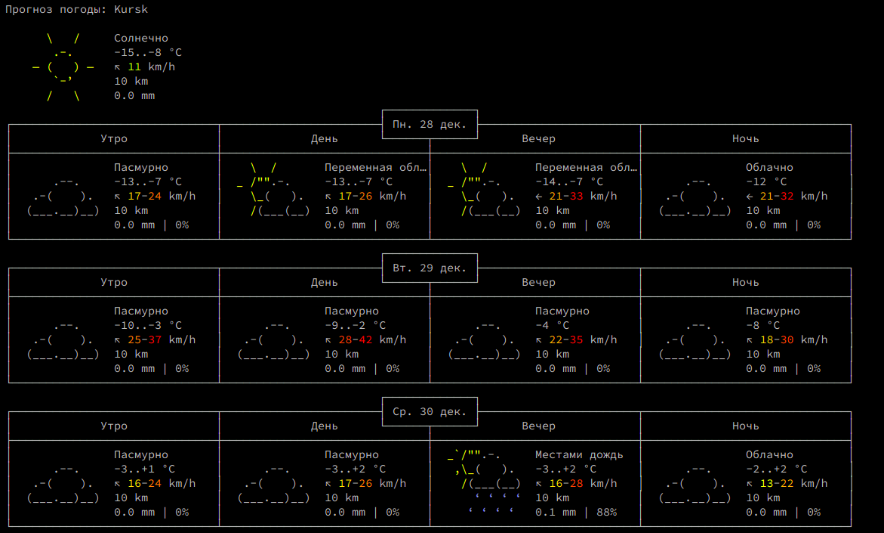

На досуге добавил в свой терминал очередной alias, решил поделиться.
Есть сайт wttr.in, который мгновенно отдает погоду в зависимости от вашей локации.
В терминале запрос будет выглядеть так
curl wttr.in
Результат

Идем дальше - сделаем красиво.
nano ~/.bashrc
# Погода
alias погода='curl http://wttr.in'
Откроем терминал еще раз. Пишем “погода”.
Результат сразу в консоли.